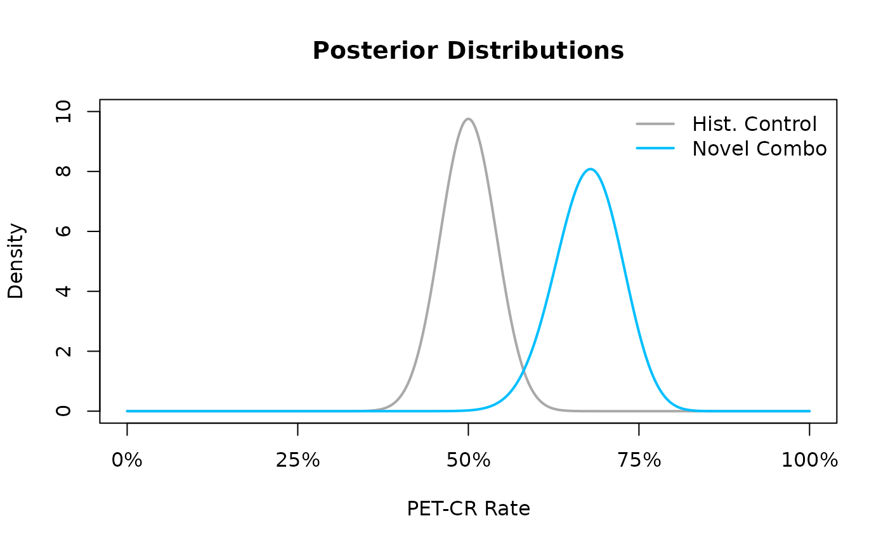

`phase1b`: Tools for Decision Making in Phase 1b Studies
Audrey Yeo
audrey.yeo@roche.comTony Pourmohamad
pourmoht@gene.comJiawen Zhu
zhu.jiawen@gene.comDaniel Sabanes Bove
daniel@rconis.com Source:vignettes/introduction.Rmd
introduction.RmdIntroduction
This short vignette serves as an introduction into the usage of the
R-package phase1b. In particular, the vignette covers
installation of the R-package phase1b, some of the core
methodology used in the R-package phase1b, and lastly some
illustrating examples of its use in clinical trials. The
phase1b R-package is intended to be used when conducting
drug combination studies in Phase 1b trials and is especially useful for
decision making in Phase 1b trials. However, the methodology is
generalizable to many scenarios outside of Phase 1b studies and should
be viewed as a general Bayesian framework for analysis of clinical
trials and more. The focus of the current vignette though is solely on
the application in Phase 1b oncology clinical trials.
Intended Audience
This document is intended to familiarize a (potential) user of
phase1b with the models and analyses available in the
R-package. After a brief overview, the bulk of this document consists of
examples in oncology clinical trials which illustrate the various
functions and methodologies implemented by the R-package.
Note that this tutorial was not meant to serve as an instruction manual. For more detailed documentation of the functions contained in the R-package, see the R-package help-manuals. At an R prompt, type
help(package = "phase1b")Additional examples can be found in the demo files for this R-package, which can be listed by:
demo(package = "phase1b")and afterwards called by supplying the name of the demo file to the
demo() function.
Installation
The first time you use phase1b on your own computer you
will need to download and install it, however, subsequent use will only
require calling of the R-package.
install.packages("phase1b")
install.packages("ggplot2")Getting started
Before being able to run any of the commands in the
phase1b R-package, you will have to load the R-package
(assuming the R-package has been installed following the instructions in
the Installation section with the following
command:
Once loaded, you will have access to all of the functions in the
phase1b R-package. To see a list of all of the functions in
the phase1b R-package, and for browsing their associated
help pages, you should execute the following command:
help(package = "phase1b")A list of functions will be displayed and you can learn more about each function, and see examples of its use, by clicking on its corresponding link. Note that this will easiest work in R-Studio, which is the recommended software for editing and using R.
Methods and Models
This section provides a brief overview of the statistical models and
methods implemented by the phase1b R-package. The
underlying methodology is rooted in the Bayesian paradigm and an
understanding of Bayesian statistics at the level of e.g. Gelman et al. (2013) or Held and Sabanés Bové (2015) is recommended. The
methods section provides the reader with the
basics needed to understand the phase1b R-package, but
those interested in learning more about Bayesian statistics, and their
applications to clinical trials, are encouraged to read Gelman et al. (2013),Held
and Sabanés Bové (2015) or Berry et al.
(2011), respectively, for more details.
As a first pass on this document, it might make sense to the reader to skip this section and go straight on to the examples.
Posterior Distribution
As a starting point, we review the basic fundamental approach in Bayesian statistics. The Bayesian approach models both the observed data and any unknown parameters as random variables, and provides a cohesive framework for combining complex data models with external knowledge, expert opinion, or both. Here we introduce the main workhorse of the Bayesian approach, the posterior distribution, and its technical details as follows.
We start by specifying the distributional model for the observed data given a vector of unknown parameters , where is a random quantity sampled from a prior distribution . Here, is a vector of hyperparameters that are associated with the parameters of the prior distribution. For instance, might be the empirical drug response rate in a sample of women aged 40 and over from clinical center , the underlying true response rate for all such women in this center, and a parameter controlling how these true rates vary across centers. Modeling the as random (instead of fixed) effects allows us to induce specific correlation structures among them, and hence among the observations as well.
If is known then all inference concerning is based on its posterior distribution,
Notice the contribution of both the data (in the form of the likelihood ) and the previous knowledge or expert opinion (in the form of the prior ) to the posterior. Since, in practice, will not be known, a second stage (or hyperprior) distribution will often be required, and @ref(eq:posterior) will be replaced with
This multi-stage approach is often called hierarchical modeling. A computational challenge in applying Bayesian methods is that for most realistic problems, the integrations required to do inference under @ref(eq:posterior) are often not tractable in closed form, and thus must be approximated numerically. Forms for and (called conjugate priors) that enable at least partial analytic evaluation of these integrals may often be found, but in the presence of nuisance parameters, some intractable integrations remain.
We further illustrate the concept of the posterior distribution, its
calculations, and its use, via exploring the underlying methodology
implemented in the phase1b R-package
functionpostprob(). The postprob() function
assumes that the observed data
arise from a Binomial distribution of size
with unknown parameter
,
i.e.,
Under the Bayesian approach, the parameter
is treated as a random unknown quantity in the model. The prior
distribution for
can be elicited from external knowledge or expert opinion, however, the
use of a conjugate prior is employed here. The prior used in
postprob() is of the following form: $P_E\sim \sum_i=1}^kw_i\text{Beta}(a_i,b_i)$,
so a mixture of Beta distributions, but for simplicity, the default
prior in postprob() is set to be the single conjugate Beta
distribution,
.
Here we make the assumption that a (mixture) Beta prior is a reasonable
choice for the prior distribution of
.
To derive the posterior distribution, based on this prior assumption, we
have the following:
Realizing that densities must integrate to 1, we just need to figure out what the normalizing constants are for this proportional density. Using conjugacy, we realize that the posterior distribution of must also follow the same form as the prior distribution for , and thus we recognize that the posterior distribution is the following Beta distribution
Here we illustrate a posterior of a simple prior as an illustration . In section @ref(updateposterior), we illustrate a mixture Beta distribution and how weights and parameters are updated with data.
All further probabilistic calculations follow naturally under the
Bayesian approach once the posterior distribution has been identified.
For example, as seen in the function postprob(), one could
calculate the posterior probability that the rate
is greater than (or less than) some threshold
,
i.e.,
,
by simply calculating the area under the corresponding Beta
distribution.
Updating Posterior Distribution parameters and weights
In order to incorporate prior information and evaluate posterior probabilities, updated weights and parameters are required especially where mixed Beta-Binomial distribution is involved. To demonstrate the calculation of how parameters and weights are updated, we illustrate the reasoning as follows.
We present the Binomial likelihood and the mixture of Beta distributions prior to begin:
Where the sum has to equal 1: .
Each component has the Beta density:
Here is the beta function evaluated with parameters and . Then, the product of likelihood and prior gives the kernel for the posterior where we exclude the normalising constants as well as any other multiplicative constants not depending on :
From @ref(eq:rearrangingWeightedBayes), we know that the updated Beta prior is embedded and can be simplified to the following:
We can identify the shape of the density as that of a mixture
distribution with weights being proportional to
:
The normalizing constant is thus:
such that the updated weights are given as :
Difference in beta random variables
One may wish to know the distribution of the difference in response
rates between groups. Recall that, under previous assumptions, we can
characterize the posterior distribution of the group response rate as a
Beta distribution. Thus, under the Bayesian approach, we can describe
the distribution of the difference in response rates between groups
simply as the distribution of the difference of two Beta random
variables. Once again, this idea generalizes to the case of a Beta
mixture prior, however, for sake of argument, we focus on the simpler
case. To better understand the underlying methodology implemented in the
phase1b R-package, consider the following probabilistic
calculations.
Let and be two independent random variables where and . Of interest is calculating the distribution of the difference of and and so, in order to do so, we can utilize a transformation of variables by defining the following random variables and such that and . Recalling basic probability theory, we have that determinant of the Jacobian matrix of this transformation is as follows:
and thus the joint distribution of and is the following:
Recalling that we are interested in the distribution of the difference of and , i.e., p(z), we must marginalize over in order to recover this distribution. However, this integration is not trivial, and caution must be used to ensure proper integration over the correct domain of . For ease of understanding, Figure @ref(fig:betadiff) depicts the domain of the joint distribution of where the area has been split into two triangles to assist visually with the appropriate integral needed to marginalize over the domain of .
The shaded region show the domain of the joint distribution of and . We shade the two triangular regions grey and blue for sake of understanding the bounds of integration necessary for marginalization over out of the joint distribution.
Marginalizing the joint distribution
over
results in the following marginal distribution for
:
Thus the distribution of the difference
of two beta random variables can be characterized by @ref(eq:betadiff).
However, these integrals are not analytically tractable and so we
approximate them using R’s built-in
integrate() function inside of the phase1b
R-package function betadiff().
Predictive Probabilities
Rather than reconstruct the argument of predictive probability
calculations completely, the reader is advised to see the book Berry et al. (2011) for further discussion on
the topic. Here we quote parts of pages 142 – 144 of Berry et al. (2011) to better understand the
methodology of predictive probability that is implemented in
the functions predprob, odPredprob etc.
Introduction
A distinct advantage of the predictive probability (PP) approach is that it mimics the clinical decision making process. Based on the interim data, PP is obtained by calculating the probability of a positive conclusion (rejecting the null hypothesis) should the trial be conducted to the maximum planned sample size. In this framework, the chance that the trial will show a conclusive result at the end of the study, given the current information, is evaluated. The decision to continue or to stop the trial can be made according to the strength of this predictive probability. In what follows, we quote directly Berry et al. (2011) and explain the definition and basic calculations for binary data.
Suppose our goal is to evaluate the response rate for a new drug by testing the hypothesis versus . Suppose we assume that the prior distribution of the response rate, , follows a distribution. The quantity gives the prior mean, while the magnitude of indicates how informative the prior is. Since the quantities and can be considered as the numbers of effective prior responses and non-responses, respectively, can be thought of as a measure of prior precision: the larger this sum, the more informative the prior and the stronger the belief it contains.
Suppose we set a maximum number of accrued patients , and assume that the number of responses among the current patients () follows a distribution. By the conjugacy of the beta prior and binomial likelihood, the posterior distribution of the response rate follows another a beta distribution, .The predictive probability approach looks into the future based on the current observed data to project whether a positive conclusion at the end of study is likely or not, and then makes a sensible decision at the present time accordingly.
Let be the number of responses in the potential future patients. Suppose our design is to declare efficacy if the posterior probability of exceeding some prespecified level is greater than some threshold . Marginalizing out of the binomial likelihood, it is well known that follows a beta-binomial distribution, . When , the posterior distribution of is . The predictive probability (PP) of trial success can then be calculated as follows. Letting and the indicator function , we have
The quantity is the probability that the response rate is larger than given responses in patients in the current data and responses in future patients. Comparing to a threshold value yields an indicator for considering the treatment efficacious at the end of the trial given the current data and the potential outcome of .
Basic predictive probability design
The weighted sum of indicators yields the predictive probability of concluding a positive result by the end of the trial based on the cumulative information in the current stage. A high PP means that the treatment is likely to be efficacious by the end of the study, given the current data, whereas a low PP suggests that the treatment may not have sufficient activity. Therefore, PP can be used to determine whether the trial should be stopped early due to efficacy/futility or continued because the current data are not yet conclusive. We define a rule by introducing two thresholds on PP. The decision rule can be constructed as follows:
Algorithm (Basic PP design)
- Step 1: If , stop the trial and reject the alternative hypothesis;
- Step 2: If , stop the trial and reject the null hypothesis;
- Step 3: Otherwise continue to the next stage until reaching patients.
Typically, we choose as a small positive number and as a large positive number, both between 0 and 1 (inclusive). Note that and hence the order of steps 1, 2 and 3 is not relevant. indicates that it is unlikely the response rate will be larger than at the end of the trial given the current information. When this happens, we may as well stop the trial and reject the alternative hypothesis at that point. On the other hand, when , the current data suggest that, if the same trend continues, we will have a high probability of concluding that the treatment is efficacious at the end of the study. This result, then, provides evidence to stop the trial early due to efficacy. By choosing and , the trial can terminate early due to either futility or efficacy. When the trial reaches to the maximal number of subjects, the predictive probability . Because is a constant, will equal to either 0 or 1 and hence there will always be a Go or no Go decision made at the final analysis, i.e no “gray zone†exists.
Advanced predictive probability design
Since usually in phase 1b trials, the response rate endpoint is a surrogate for early determination of meaningful clinical benefits, a “gray zone†at final analyses for further evaluations may be desired in practice. To plan such a design, an advanced predictive probability approach has been included in the latest version of the R-package.
A major difference between this and the previous approach is that, in addition to the hypothesis for Go decision, versus , a separate hypothesis testing rule for no Go/futility decisions, versus is utilized (Note that is required).
Hence, at the final analysis: - The design is to declare efficacy if the posterior probability of is greater than a threshold (event A) - The design is to declare futility if the posterior probability of is greater than a threshold (event B)
Here and range from 0 to 1.
Thus the decision rule for interim and final analyses can be conducted as a mixture of two basic PP designs:
Algorithm (Advanced PP design). - Step 1: If , stop the trial and declare efficacy; - Step 2: If , stop the trial and declare futility; - Step 3: Otherwise continue to the next stage until reaching patients.
Note that here and are typically both probabilities above 0.5. Hence indicates it is very likely that the treatment is efficacious at the end of the study if the same trend of current data continues. And indicates that there is a high likelihood that the treatment will be declared as inefficacious given the current information.
In fact, the predictive probability for futility can be written in the format of the predictive probability for efficacy:
Thus by using this trick, the predprob() or
predprobDist() functions can be used to calculate the
predictive probabilities for futility. The separate section describes
this advanced predictive probability
design.
Examples using phase1b
The following subsections take the reader through a series of
synthetic examples based on a specific Oncology indication. The
accompanying (highly modifiable) R code is intended to help
familiarize the user with the phase1b R-package, which can
of course be applied to any indication.
Scenario for the example
Assume the following hypothetical scenario. The current standard of care (SOC) for the cancer XYZ is the chemotherapy regimen known as ABC. In this example, we explore the potential advantage of a phase 1b combination trial in the XYZ indication by combining ABC with a new molecule, say D, as compared to the current SOC. For the combination example considered, the unmet need is a progression free survival (PFS) hazard ratio (HR) of 0.64. The control comes from a 150 patient subset of a previous study using ABC in XYZ, and our Phase 1b endpoint is PET-CR as it has been hypothesized that a meaningful improvement in PET-CR may predict a meaningful improvement in PFS.
Posterior Probability Design
Posterior Probability Calculations
Under the Bayesian approach, we quantify all of our a priori uncertainty about the PET-CR rates via their prior distributions. For sake of example, we use a prior to describe our uncertainty about the unknown PET-CR rate for the novel combo (ABC + D), however in practice, this prior would be chosen based on historical data and/or eliciting expert knowledge and opinion. Likewise, for the historical control (ABC), we set the prior distribution equal to the posterior distribution which is a distribution that is centered exactly at the observed PET-CR rate in the historical control.
The following lines of code @ref(fig:ex1-prior) allow the user to be able to visualize our prior uncertainty about the PET-CR rates between the historical control and the novel combination.
xx <- seq(0, 1, .001)
dens.control <- dbeta(xx, 75, 75) # Posterior of the control
dens.prior <- dbeta(xx, 5.75, 4.25) # Prior of the Phase 1b trial
plot(xx, dens.control,
type = "l", lwd = 2, col = "darkgrey", axes = FALSE,
xlab = "PET-CR Rate", ylab = "Density", ylim = c(0, 10),
main = "Prior Distributions"
)
lines(xx, dens.prior, lwd = 2, col = "deepskyblue")
axis(1, seq(0, 1, .25), c("0%", "25%", "50%", "75%", "100%"))
axis(2)
box()
legend("topright", c("Hist. Control", "Novel Combo"),
lwd = 2, lty = 1,
col = c("lightgrey", "deepskyblue"), bty = "n"
)The prior distributions for the historical control and novel combination treatment group. A $ ext{Beta}(75,75)$ prior is used for the historical control, and a $ ext{Beta}(5.75,4.25)$ prior is used for the novel combination treatment group
In the resulting Figure~@ref(fig:ex1-prior) we see that the density of the prior for the historical control is greatly concentrated in the area of the observed PET-CR rate while the prior for PET-CR rate of the novel combination is more dispersed across many potential PET-CR rates indicating a higher level of apriori uncertainty. Now, using the posterior distribution, we can update our uncertainty about the PET-CR rate for the novel combination via calculating the posterior distribution. Recall that our prior distribution for the novel combination PET-CR rate is a , and the data likelihood, conditional on the PET-CR rate, follows a binomial likelihood and thus, due to conjugacy, the posterior distribution will also follow a Beta distribution with updated parameters based on the observed data. For example, if after running the trial for the novel combination we were to observe 55 responders out of a total of 80 patients, i.e., a PET-CR rate of 68.75%, then our posterior updating based on the prior distribution and observed data would lead to a posterior distribution for the novel combination PET-CR rate.
Alternatively, we could use the R-package function
plotBeta() to achieve the same result, see
Figure~@ref(fig:ex1-prior_plotBeta1) and
Figure~@ref(fig:ex1-prior_plotBeta2).
plotBeta(alpha = 75, beta = 75)The prior distributions for the historical control and novel combination treatment group. A $ ext{Beta}(75,75)$ prior is used for the historical control, and a $ ext{Beta}(5.75,4.25)$ prior is used for the novel combination treatment group.
For the Novel combination, the following posterior has been updated.
plotBeta(alpha = 5.75, beta = 4.25)The prior distributions for the historical control and novel combination treatment group. A $ ext{Beta}(75,75)$ prior is used for the historical control, and a $ ext{Beta}(5.75,4.25)$ prior is used for the novel combination treatment group.
The following code allows the reader to visualize the posterior distribution for the PET-CR rate against the posterior distribution of the historical control.
xx <- seq(0, 1, .001)
dens.control <- dbeta(xx, 75, 75)
dens.post <- dbeta(xx, 5.75 + 55, 4.25 + 80 - 55) # 80 is sample size of 1b trial and 55 is the number of responders
plot(xx, dens.control,
type = "l", lwd = 2, col = "darkgrey", axes = FALSE,
xlab = "PET-CR Rate", ylab = "Density", ylim = c(0, 10),
main = "Posterior Distributions"
)
lines(xx, dens.post, lwd = 2, col = "deepskyblue")
axis(1, seq(0, 1, .25), c("0%", "25%", "50%", "75%", "100%"))
axis(2)
box()
legend("topright", c("Hist. Control", "Novel Combo"),
lwd = 2, lty = 1,
col = c("darkgrey", "deepskyblue"), bty = "n"
)
In the resulting Figure~@ref(fig:ex1-posterior) we see that the
posterior distribution is much more peaked than the prior distribution
in Figure~@ref(fig:ex1-prior) reflecting the fact that once we have
observed data, our uncertainty about the true PET-CR rate in the novel
combination should diminish. Once the posterior distribution is
obtained, the user can use the postprob() command to make
posterior probability calculations about the PET-CR rate for either the
novel combination or historical control. For example, the user could
calculate the probability that the PET-CR rate is greater than 60%,
i.e.,
,
by issuing the following command:
Here the result indicates that there is a roughly 93% chance that the PET-CR rate for the novel combination is above 60%.
Operating Characteristics
Similarly, the user may be interested in calculating the frequentist probability that a clinical trial is stopped for efficacy or futility, conditional on true values of the response rate. These calculations need to take into account in particular interim looks at the data before reaching the final sample size of the trial. Hence, the calculations are difficult to perform in a closed manner. However, we can resort to Monte Carlo calculation, which means that we simulate a very large number of trials and estimate with high precision the frequentist probabilities of interest. These are the key operating characteristics of the trial design.
For example, we may be interested in a conducting a single arm Phase 1b trial where interim analyses will be planned once we have accrued 10, 20 and 30 patients (30 being the maximum number of patients we will accrue). We declare efficacy early, at the interim looks, if the posterior probability that the observed response rate, , is greater than a predefined efficacy threshold, , exceeds some upper probability threshold , i.e.,
Likewise, we declare futility early if the the posterior probability that the observed response rate, , is less than some predefined efficacy threshold, , is smaller than some lower probability threshold , i.e., Following the usual Bayesian framework, we need to specify a prior distribution for the unknown response rate and so we place a prior for our unknown response rate .
Furthermore, we may wish to examine the operating characteristics of
this design in the scenario that the true response rate,
,
is equal to 40% – so in a scenario where we would like to declare
efficacy. In order to calculate the operating characteristics using
10,000 (parameter ns) simulated trials, we issue the
following command:
set.seed(4)
results <- ocPostprob(
nnE = c(10, 20, 30),
truep = 0.4,
p0 = 0.2,
p1 = 0.3,
tL = 0.6,
tU = 0.8,
parE = c(1, 1),
sim = 100,
wiggle = FALSE,
nnF = c(10, 20, 30)
)
#> Warning in ocPostprob(nnE = c(10, 20, 30), truep = 0.4, p0 = 0.2, p1 = 0.3, :
#> Advise to use sim >= 50000 to achieve convergence
results$oc
#> ExpectedN PrStopEarly PrEarlyEff PrEarlyFut PrEfficacy PrFutility PrGrayZone
#> 1 19.8 0.64 0.57 0.07 0.71 0.07 0.22Here the object results is a list, which stores the
operating characteristics of running the simulations inside the element
oc. From our simulations we have that the expected number
of patients in the trial, after stopping for either efficacy or
futility, is 19. Furthermore, 67% of the simulated trials stopped early
during the interim analyses. Of these 10,000 trials, 61.95% declared
early efficacy while 5.27% of them were stopped early for futility.
However, combining the trials that did and did not stop early, 75.64% of
have declared efficacy while 5.4% of have declared futility. These
percentages do not sum up to 100% because of the 10,000 simulated trials
18.62% would not have been declared as efficacious or futile by the time
the maximum sample size of 30 patients had been reached – i.e., they
fell into the grayzone.
Difference in Posterior Distributions
The user may be interested in showing that the novel combination is
superior to the historical control when comparing PET-CR rates. In order
to make such a comparison, we can make use of the
dbetadiff() function to compute the distribution of the
difference in PET-CR rates between the novel combination and the
historical control. This is a relatively simple task and, from the
Bayesian point of view, this is simply the distribution of the
difference in posterior distributions, which is equivalent to the
distribution of the difference in two independent Beta random variables.
The interested user is reminded to read the methods
section for the detailed analytical calculations of this
distribution.
Returning to the previous example, recall that we placed a
prior on the PET-CR rate for the novel combination, and observed 55
responders out of 80 patients in the novel combination, as well as 75
responders out of 150 patients in the historical control. These observed
PET-CR rates led to a
and a
posterior distribution for the novel combination and historical control
PET-CR rates, respectively. Based on our learning endpoint, we may
believe that seeing a difference in PET-CR rates greater than some
threshold, say for example 15%, may indicate a meaningful improvement in
PFS for the novel combination over the historical control. Defining the
difference in PET-CR rates to be
,
we may ultimately be interested in making probabilistic calculations
such as
or
because these calculations may be informative for Go" andNo
Go” decisions. For example, if
or the
is “large” then we may decide to declare a go or no go, respectively.
Consider a probability exceeding 60% to be large, then following the
same example as above, we could evaluate the following go/no go criteria
based on the distribution of the difference in PET-CR with the code for
@ref(fig:ex1:betadiff1).
parX <- c(75, 75)
parY <- c(5.75 + 55, 4.25 + 80 - 55)
xx <- seq(-0.5, 0.75, 0.001)
dens <- dbetadiff(xx, parY, parX)
x.poly <- c(rev(xx), xx)
y.poly <- c(rep(0, length(xx)), dens)
idx1 <- which(x.poly < 0.05)
idx2 <- which(x.poly > 0.15)
plot(xx, dens,
type = "l", main = "PET-CR Comparison",
xlab = "(Combo Response) - (Control Response)",
ylab = "", yaxs = "i", axes = FALSE
)
axis(1, seq(-0.5, 0.75, .25), c("-50%", "-25%", "+0%", "+25%", "+50%", "+75%"))
polygon(x.poly[idx1], y.poly[idx1], col = "red")
polygon(x.poly[idx2], y.poly[idx2], col = "green")
box()
legend("topright", c("Prob. of No Go", "Prob. of Go"),
pch = 15,
col = c("red", "green"), bty = "n"
)
arrows(.5, 2, .22, 1, lwd = 2)
text(.5, 2.2, expression("Prob" * (Delta > +15 * "%")))
arrows(-.25, 2, 0, .2, lwd = 2)
text(-.25, 2.2, expression("Prob" * (Delta < +5 * "%")))Alternatively, we could use the R-package function
myPlotDiff() to achieve the the same result in far fewer
lines of code, see Figure~@ref(fig:ex1:betadiff1:myPlotDiff)).
myPlotDiff(c(5.75 + 55, 4.25 + 80 - 55), c(75, 75), 0.15, 0.05, 1, 0,
xlab = "(Combo Response) - (Control Response)"
)
legend("topright", c("Prob. of No Go", "Prob. of Go"),
pch = 15,
col = c("red", "green"), bty = "n"
)
arrows(.5, 2, .22, 1, lwd = 2)
text(.5, 2.2, expression("Prob" * (Delta > +15 * "%")))
arrows(-.25, 2, 0, .2, lwd = 2)
text(-.25, 2.2, expression("Prob" * (Delta < +5 * "%")))
The distribution of the difference in PET-CR rates amongst the novel combination group and the historical control. Here, we see that the probability of a go decision (green) is much more likely than the probability of a no go decision (red).
In Figure @ref(fig:ex1:betadiff1) we see that the probability of a go decision (shaded green) is much larger than the probability of a no go decision (shaded red). In fact, we can calculate those exact probability values of a go/no go decision with the following commands:
pbetadiff(0.05, parY = c(5.75 + 55, 4.25 + 80 - 55), parX = c(75, 75))
#> [1] 0.02684542
1 - pbetadiff(0.15, parY = c(5.75 + 55, 4.25 + 80 - 55), parX = c(75, 75))
#> [1] 0.6558079From our “large†threshold of exceeding 60%, we see that we would declare a go decision in this situation since the probability that exceeds 15% is equal to 66% which is larger than our 60% threshold.
Alternatively, this posterior probability can be calculated using the
postprobDist() function, as follows:
1 - postprobDist(x = 55, n = 80, delta = 0.05, parE = c(5.75, 4.25), parS = c(75, 75))
#> [1] 0.02684542
postprobDist(x = 55, n = 80, delta = 0.15, parE = c(5.75, 4.25), parS = c(75, 75))
#> [1] 0.6558079This function works in a very similar way as postprob
explained here. The only difference is that
there is now the beta prior distribution on the comparator response
rate.
On the other hand, had we observed a hypothetical situation where the number of responders was much lower, say 42 responders out of 80 patients, than we could re-run the same analysis to see how this would impact our go/no go decisions. The following code re-runs the previous example but with a much lower response rate of .
parX <- c(75, 75)
parY <- c(5.75 + 42, 4.25 + 80 - 42)
xx <- seq(-0.5, 0.75, 0.001)
dens <- dbetadiff(xx, parY, parX)
x.poly <- c(rev(xx), xx)
y.poly <- c(rep(0, length(xx)), dens)
idx1 <- which(x.poly < 0.05)
idx2 <- which(x.poly > 0.15)
plot(xx, dens,
type = "l", main = "PET-CR Comparison",
xlab = "(Combo Response) - (Control Response)",
ylab = "", yaxs = "i", axes = FALSE
)
axis(1, seq(-0.5, 0.75, .25), c("-50%", "-25%", "+0%", "+25%", "+50%", "+75%"))
polygon(x.poly[idx1], y.poly[idx1], col = "red")
polygon(x.poly[idx2], y.poly[idx2], col = "green")
box()
legend("topright", c("Prob. of No Go", "Prob. of Go"),
pch = 15,
col = c("red", "green"), bty = "n"
)
arrows(.45, 2, .2, .5, lwd = 2)
text(.45, 2.2, expression("Prob" * (Delta > +15 * "%")))
arrows(-.3, 2, -.03, .9, lwd = 2)
text(-.3, 2.2, expression("Prob" * (Delta < +5 * "%")))The distribution of the difference in PET-CR rates amongst the novel combination group and the historical control. Here, we see that the probability of a go decision (green) is much less likely than the probability of a no go decision (red).
Note now that the change in response rate also affects the posterior distribution of the PET-CR rate for the novel combination group. Before the posterior distribution was a distribution and now, due to the low observed response rate, the posterior distribution is a . Using this new posterior distribution, we obtain the following distribution of the difference, Figure~@ref(fig:ex1:betadiff2), in PET-CR rates between the two groups. We see that the probability of a no go decision is much higher than the probability of a go decision due to the lower response rate in the novel combination group. As before, we can execute the following commands to calculate those exact probabilities:
1 - postprobDist(x = 42, n = 80, delta = 0.05, parE = c(5.75, 4.25), parS = c(75, 75))
#> [1] 0.6142228
postprobDist(x = 42, n = 80, delta = 0.15, parE = c(5.75, 4.25), parS = c(75, 75))
#> [1] 0.03532739Thus, there is a 61% chance that the novel combination results in a less than 5% improvement in PET-CR rates relative to the historical control, and hence a no go decision would be declared.
Predictive Probability Design
This example aims to illustrate the usage of predictive probabilities (PP) to conduct interim analyses as described in the basic PP design. The single arm XYZ combo trial which was discussed in the previous section is used in this section as well. Besides, this section also includes a simulation study to evaluate the operating characteristics of the study design.
Similar to the previous example, it has been hypothesized that a 15% absolute increasement of PET-CR may predict a meaningful clinical benefit for XYZ patients. Thus the goal of the trial is set to evaluate the PET-CR rate by testing the hyoithesis versus . Thus let’s further determine that, when the sample size reaches the maximum, the study is to declare efficacy if the posterior probability of is greater than a threshold . Otherwise, the study is to declare futility.
Here, it is assumed that 2 interim analyses are planed at 25 and 40 patients along with a final analysis at 80 patients to evaluate both efficacy and futility. The study stops at interim when
- Efficacy stop if
- Futility stop if
where we set and for illustration.
Please be aware, there will be no “gray zone†in terms of decision making at the final analysis when using the the basic PP design (see details in the predictive probability section).
Predictive Probability Calculation
To calculate the predictive probability when comparing two
distributions (treatment vs. SOC), the predprobDist()
function can be used. In order to perform the calulation, the maximal
number of patient (80), a Beta prior of the treatment arm
(),
a Beta posterior distribution of the SOC arm
()
are required. Since the beta distribution is a conjugate prior to the
binomial distribution (see formula 1-8), the posterior distribution of
SOC can be directly entered to the parS argument.
For instance, if there are 18 PET-CR at the first interim analysis (n=25), the predictive probabilities can be calculated by
predprobDist(
x = 18, n = 25, Nmax = 80,
delta = 0.15,
thetaT = 0.6,
parE = c(5.75, 4.25),
parS = c(75, 75)
)[1]
#> $result
#> [1] 0.5755374In this case, study will continue since PP, 57.5%, does neither exceed 80% nor fall below 20%.
Operating Characteristics Evaluation
Before the Phase 1b trial starts, users may want to evaluate the
design operating characteristics at an assumed true PET-CR rate of the
combo trial. The ocPredprobDist() function will allow such
an evaluation under a single scenario of true response rate. The
following code assumes a true PET-CR rate of 75%. The planned interim
and final looks are at 25, 40 and 80 patients which is entered as a
vector in the nnE argument. truep is the true
PET-CR rate we assumed, and we are targeting for a deltaE
improvement over control (deltaE and deltaF
ranges from 0 to 1). tT is the threshold for the
probability to be above control + delta at the end of the trial, and
phiL and phiU are the lower and upper
thresholds on the predictive probability, respectively. Same as the
notations in the predprobDist() function, parE
and parS are the place to enter beta parameters for the
prior on the treatment and control proportion, respectively.
# with 100 simulated trials, assume true PET-CR rate of the combo trial is 40%
set.seed(4)
res1 <- ocPredprobDist(
nnE = c(25, 40, 80),
truep = 0.75,
deltaE = 0.15,
deltaF = 0.15,
relativeDelta = TRUE,
tT = 0.6,
phiL = 0.2,
phiU = 0.8,
parE = c(5.75, 4.25),
parS = c(75, 75),
weights = 1,
weightsS = 1,
sim = 5, # advise to use > 50000 to achieve convergence
nnF = c(25, 40, 80),
wiggle = TRUE,
decision1 = TRUE
)
#> Warning in ocPredprobDist(nnE = c(25, 40, 80), truep = 0.75, deltaE = 0.15, :
#> Advise to use sim >= 50000 to achieve convergence
res1$oc
#> ExpectedN PrStopEarly PrEarlyEff PrEarlyFut PrEfficacy PrFutility PrGrayZone
#> 1 64 0.4 0.4 0 1 0 0The number of simulation is 10 in this case, just to speed up the example. However, the user needs to increase the number to 50,000 or higher to generate better convergence.
According to the simulation result, the expected sample size of the trial is 44.4. 87% of the simulated trials declare efficacy and the rest 13% of trials declare futility. In terms of early stopping, 71% of the simulated trials stop at interim. Among those, trials stop for efficacy, and trials stop for futility.
Usually, more than one true scenario will be evaluated. Figure @ref(fig:ex2:summary) summerizes the operating characteristics among different true PET-CR rate from 10% to 80%. Y axis is the percentage of trials that return a efficacy/futility decision. When true rate is low comparing to the response rate of control+delta, a efficacy decision is considered as a type I error, and when true rate is relatively high comparing to the control+delta, a futility decision is considered as a type II error.
set.seed(4) # Used for reproducibility
p_par <- seq(0.1, 0.9, by = 0.1)
Mysim <- sapply(p_par, function(x) {
res <- ocPredprobDist(
nnE = c(25, 40, 80),
truep = x,
delta = 0.15,
deltaF = 0.15,
relativeDelta = TRUE,
tT = 0.6,
phiL = 0.8,
phiU = 0.2,
parE = c(5.75, 4.25),
parS = c(75, 75),
weights = 1,
weightsS = 1,
sim = 10, # advise to use > 50000 to achieve convergence
nnF = c(25, 40, 80),
wiggle = TRUE,
decision1 = TRUE
)
return(res$oc)
})
#> Warning in ocPredprobDist(nnE = c(25, 40, 80), truep = x, delta = 0.15, :
#> Advise to use sim >= 50000 to achieve convergence
#> Warning in ocPredprobDist(nnE = c(25, 40, 80), truep = x, delta = 0.15, :
#> Advise to use sim >= 50000 to achieve convergence
#> Warning in ocPredprobDist(nnE = c(25, 40, 80), truep = x, delta = 0.15, :
#> Advise to use sim >= 50000 to achieve convergence
#> Warning in ocPredprobDist(nnE = c(25, 40, 80), truep = x, delta = 0.15, :
#> Advise to use sim >= 50000 to achieve convergence
#> Warning in ocPredprobDist(nnE = c(25, 40, 80), truep = x, delta = 0.15, :
#> Advise to use sim >= 50000 to achieve convergence
#> Warning in ocPredprobDist(nnE = c(25, 40, 80), truep = x, delta = 0.15, :
#> Advise to use sim >= 50000 to achieve convergence
#> Warning in ocPredprobDist(nnE = c(25, 40, 80), truep = x, delta = 0.15, :
#> Advise to use sim >= 50000 to achieve convergence
#> Warning in ocPredprobDist(nnE = c(25, 40, 80), truep = x, delta = 0.15, :
#> Advise to use sim >= 50000 to achieve convergence
#> Warning in ocPredprobDist(nnE = c(25, 40, 80), truep = x, delta = 0.15, :
#> Advise to use sim >= 50000 to achieve convergence
peffbp <- Mysim[5, ]
pfutbp <- Mysim[6, ]
par(mar = c(5, 4, 1, 1) + .1)
plot(c(0, 1), c(0, 1), type = "n", xlab = "True Rate", ylab = "Pr(Decision)")
grid()
lines(p_par, peffbp, lwd = 5, col = "green")
lines(p_par, pfutbp, lwd = 5, col = "red")
legend(.1, .6,
lwd = 5, col = c("green", "red"), cex = .75,
c("Efficacy Decision", "Futility Decision")
)A summary plot of Go/No Go decisions over different true rates
Advanced predictive probability design
As an extension of the basic example, this example shows a way to use predictive probabilities (PP) to conduct interim analyses allowing gray zones at the final analyses, i.e. trial results where neither efficacy nor futility decisions are made are possible (refering to the advance PP design in the predictive probability section). Such a final analysis design was used in the XYZ example, of which the basic PP design used in the example earlier is not suitable for the related interim analyses, while the advanced predictive probability design should be used.
An advantage of such a design is that it allows an option of further evaluation on additional clinical endpoints or PD markers when the decision falls into the “gray zone”. Moreover, a separate delta can be specified for the futility decision to represent a “pool clinical improvement”, which makes it a more flexible decision rule.
The single arm XYZ combo trial which was discussed in the previous examples is used here as well. A simulation study to evaluate the operating characteristics of study design is carried out.
Similar to the first example, the goal is to evaluate the PET-CR rate by testing the hypothesis versus for efficacy. And the futility checks are conducted by testing the hypothesis versus . Here, we assume that 2 interim analyses are planed at 25 and 40 patients along with a final analysis to evaluate both efficacy and futility.
Thus at the final analysis:
- The design is to declare efficacy if the posterior probability of is greater than a threshold (event A)
- The design is to declare futility if the posterior probability of is greater than a threshold (event B)
and are the thresholds set for the posterior probabilities at the final analysis. 60% is assumed for both of the parameters.
In addition, we assume the study stops at interim when
- Efficacy stop if
- Futility stop if
where for illustration. and are independent thresholds and can be set to unequal values depending on the need of users.
Predictive Probability Calculation
The following code shows how to utilize the
predprobDist() function to calculate the PPs, if
there are 18 PET-CR at the first interim analysis:
# PP(event A)
result1 <- predprobDist(
x = 18, n = 25, Nmax = 80,
delta = 0.15,
thetaT = 0.6,
parE = c(5.75, 4.25),
parS = c(75, 75)
)$result
## PP(event B)
result2 <- 1 - predprobDist(
x = 18, n = 25, Nmax = 80,
delta = 0.05,
thetaT = 1 - 0.6,
parE = c(5.75, 4.25),
parS = c(75, 75)
)$resultAccording to the result, study will continue since neither PP(event A), 57.6%, nor PP(event B), 1.4% exceed .
Operating Characteristics Evaluation
To evaluate the design operating characteristics at an assumed true
PET-CR rate of the combo trial, the ocPredprobDist()
function can be used for the advanced PP design as well. To do so,
additional arguments, such as deltaFu, tFu and
phiFu need to be specified. Also, the phiL
argument has to be skipped. To evaluate a scenario with a true response
rate of
,
the following code can be used:
# with 100 simulated trials, assume true PET-CR rate of the combo trial is 40%
set.seed(4) # Used for reproducibility
res1 <- ocPredprobDist(
nn = c(25, 40, 80),
truep = 0.75,
deltaE = 0.15,
deltaF = 0.05,
tT = 0.6,
tF = 0.6,
phiU = 0.8,
phiFu = 0.8,
parE = c(5.75, 4.25),
parS = c(75, 75),
weights = 1,
weightsS = 1,
sim = 50,
nnF = c(25, 40, 80),
wiggle = TRUE,
decision1 = FALSE
)
#> Warning in ocPredprobDist(nn = c(25, 40, 80), truep = 0.75, deltaE = 0.15, :
#> Advise to use sim >= 50000 to achieve convergence
res1$oc
#> ExpectedN PrStopEarly PrEarlyEff PrEarlyFut PrEfficacy PrFutility PrGrayZone
#> 1 70.3 0.22 0 0.22 0.7 0.22 0.08The number of simulation is 10 here to reduce the computational time of the code. However, user must increase the number to 10,000 or higher to generate a correct result.
Comparing to the example earlier, there could be a gray zone at the final analysis. According to the simulation result, 6% of the simulated trials declared neither efficacy or futility at the final analysis (i.e. “gray zone”). The expected sample size, which is 50, tends to be higher than the one in the example earlier. 94% of the simulated trials declare efficacy, and of them stop at interim. Besides, none of the simulated trial stop for futility.
Similar simulation analyses can be conducted for different assumed true PET-CR rates other than 75%, to have a more complete picture of the operating characteristics.
Acknowledgments
The authors would like to thank everyone that has contributed to the
phase1b R-package, particularly James Lymp who had
implemented the first functions in an earlier version of this
R-package.